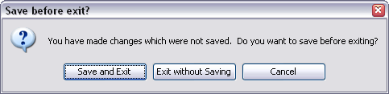

You can choose to save a project at any point. A SeqMonk project file is a single file which saves both your data and many of your display preferences so that you can get back to working on your data very quickly.
Data which is stored in a project file is:
Some preferences are not stored in the project file and won't be remembered when the program reopens.
If you have changed any of the details which SeqMonk stores in its project file during your session, when you close the program you will be prompted to re-save the project before exiting.

You should be aware that because SeqMonk has to write out all of the read data when it saves a project that this can take a few minutes to complete if you have several large datasets open.